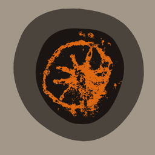

Espeleólogos
Para documentar cavidades, paneles, posibles marcas y pigmentos durante exploraciones o revisiones de campo.

documentación visual rupestre
Rupestra ayuda a identificar, resaltar y documentar pigmentos rupestres mediante visión por computador clásica, análisis cromático avanzado y herramientas de registro pensadas para trabajo de campo.
Herramienta de apoyo documental. La interpretación arqueológica y la validación patrimonial corresponden siempre a especialistas y autoridades competentes.

Qué es Rupestra
Rupestra es una aplicación para iPhone diseñada para apoyar trabajos de documentación de pinturas, motivos y trazas pigmentarias en cuevas, abrigos y superficies rocosas.
Permite analizar imágenes, resaltar rangos cromáticos, generar calcos visuales, aplicar realce cromático avanzado y exportar informes con datos de campo, imágenes procesadas, localización y notas.
Para quién está pensada
Para documentar cavidades, paneles, posibles marcas y pigmentos durante exploraciones o revisiones de campo.
Como apoyo visual preliminar para registrar, contrastar y preparar documentación gráfica de superficies rupestres.
Para generar informes visuales con imágenes, notas, metadatos técnicos y localización del contexto.
Para observar con más detalle, siempre desde el respeto al patrimonio y sin sustituir el criterio experto.
Modos de uso
Rupestra organiza el flujo de trabajo en modos claros para que el usuario pueda elegir entre rapidez, control manual o análisis cromático más profundo.
Selecciona un pigmento predefinido y aplica rangos calibrados para resaltar zonas compatibles: rojo ocre, ocre amarillo, rojo violáceo, negro y blanco.
Permite seleccionar un color directamente sobre la imagen y ajustar la tolerancia para analizar trazas no contempladas en los presets.
Corrige dominantes de color tomando una referencia neutra de la escena, útil en fotografías tomadas con iluminación irregular.
Análisis basado en PCA para intensificar diferencias sutiles de color y facilitar la observación de pigmentos poco perceptibles.
Modo diferencial
El modo En Vivo permite visualizar el realce de pigmentos directamente desde la cámara. En lugar de fotografiar primero y analizar después, Rupestra permite observar en tiempo real cómo responden distintas zonas de la superficie a los filtros de pigmento seleccionados.
Una herramienta pensada para tomar mejores decisiones en campo: dónde observar, qué fotografiar y qué documentar con más detalle.
Exploración visual antes de la captura definitiva
El escaneo en vivo no sustituye el análisis experto, pero acelera la inspección visual y ayuda a decidir qué zonas merecen una documentación más detallada.
Documentación de campo
Rupestra no solo procesa imágenes. También ayuda a registrar el contexto del análisis para convertir una observación en documentación organizada.
Registra coordenadas, altitud, localización y orientación cuando están disponibles.
Permite añadir observaciones de campo y convertirlas en notas asociadas al análisis.
Genera informes con datos del yacimiento, metadatos de imagen y resultados visuales.
Exporta original, resaltado, calco y realce cromático para revisión posterior.
Trabajo de campo
El proyecto surge de la experiencia directa en exploración, observación y documentación de superficies rocosas, junto al equipo multidisciplinar de Conservación de Cavidades de la Comunidad de Madrid.
Ese contacto con la realidad del campo marca el diseño de la app: poca luz, accesos complejos, necesidad de registrar contexto, revisar indicios con cuidado y generar documentación útil para el trabajo posterior.
Desarrollada desde la práctica, con atención a la conservación, el registro riguroso y las condiciones reales de trabajo en cavidades.
Galería


.JPG)


.jpg)

.JPG)


Origen del proyecto
Rupestra nace de la necesidad de documentar de forma más ágil posibles motivos, trazas y pigmentos localizados durante trabajos espeleológicos en la Comunidad de Madrid.
Su diseño responde a situaciones reales de campo: poca luz, superficies irregulares, necesidad de registrar datos y comparación visual rápida.